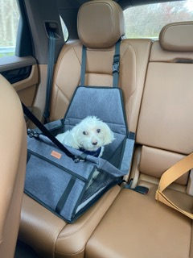
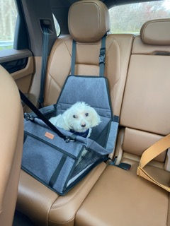

Cheeto (Chicken)

Cheeto is a cat who likes to eat a lot and play a lot. He has an obsession with his grandpa (human) and tries to get outside every single day. If he isn’t causing problems, he is usually hiding in a seven foot tall cat tree and sleeping.
Another name for Cheeto is Chicken, because sometimes he sits very scrunched up and ends up looking like a rotisserie chicken. He was nicknamed this by one of his friends, and now he understands it as his own name. He is about six years old and still acts like a younger cat, despite being middle-aged.
Photo Gallery


Likes:
- Treats
- Exploring
- My Dad
Milktea

Milktea is a Scottish fold with a personality of a princess. She loves her veggies and refuses to eat anything dropped on the ground. She makes it clear when she has a demand of any sort by complaining in a loud, distinguished manner. If what she says could be translated, it probably would be, “This is atrocious, the water container has been empty for the 3rd time this week. I want to see the manager.”
Despite her cuteness and royalty, she actually suffers from a genetic disorder intentionally brought upon by humans. I highly advise against keeping a Scottish fold because they are in constant pain when they reach around 2 years old. Cartilage accumulates around her paw joints and tail joints and it becomes painful for them to even walk. She is living evidence of human’s cruelty of breeding animals to look pretty while sacrificing the animals’ health.
Photo Gallery


Likes:
- She loves individual corn kernels served on human hands
- She enjoys sitting royally on suitcases to claim ownership of her humans
- She prefers to be alone and sit on soft surfaces in her free time
Leo

Guinea pigs are a naturally energetic animal, who spend up to 20 hours a day awake. Despite being awake for long periods of time, they naturally hide in their habitats, and can be difficult to see in their inclosures. Guinea pigs naturally are social creatures that enjoy socializing with other guinea pigs, in the wild they form packs of five to ten.
Leo is a half-lazy, half-lively guinea pig that either likes to run around on the floor, doing tiny hops, or likes to lay down in the cage for hours at a time nibbling at hay. His favorite hobby is eating, and he can tell whenever someone is about to give good to him by waiting at the end of the cardboard box patio he has attached to his cage.
Photo Gallery


Likes:
- Lettuce
- Tiny Hops
- Nap Time
Jax

Jax is a kitten, about five months old that I found this summer at a gas station while traveling to Marquette, Michigan. He was scared and malnourished, crying in the parking lot. I took him with me and after some healthy meals and a trip to the vet he is doing great!
My roommates and I just recently moved and Jax has been having a hard time getting used to the large house since we were previously living in a small apartment. Jax is incredibly playful and loves to run around, but when he is sleepy he is happy to be held.
Photo Gallery


Likes:
- Toys
- Going outside
- Attention
Milo

Milo, a bashful yet warm-hearted dog, holds a deep appreciation for social interactions, whether they involve humans or fellow pets. Having spent his entire life with the same loving family, Milo's consistent displays of loyalty reflect his strong sense of familiarity and connection. He's known for his charming quirks, such as his penchant for taking a few steps backward instead of a simple turn when changing direction.
Despite his shyness, Milo's keen senses come to the forefront. At the sound of a passing car, his bark, though more bark than bite, resonates beyond the walls of the house. Interestingly, Milo has never quite grasped the concept of navigating stairs, yet he remains remarkably perceptive about his surroundings. It's this unique blend of traits that makes Milo an endearing presence, leaving a lasting impression on those fortunate enough to share in his companionship.
Photo Gallery
 

Likes:
- Bacon
- Socks
- Attention